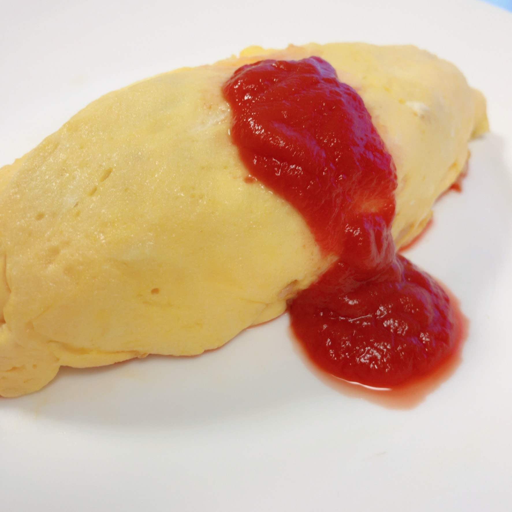

main
side
dessert
drink
オムライス

材料(2人分)
卵 4個
温かいご飯 茶碗2杯分
鶏もも肉 1/3枚 (80g)
玉ねぎ 1/2個
牛乳 大さじ2
パセリのみじん切り 大さじ2
バター 適量
塩 適量
こしょう 適量
ケチャップ 大さじ4
作り方
1. 鶏肉の下処理をし、食べやすい大きさにカットする。
2. 玉ねぎをあめ色になるまで炒める。
3. 鶏肉を加えて強火で炒め、鶏肉の表面の色が変わったら弱火にし、塩こしょうをし、火が通るまで炒める。
4. ケチャップを入れ強火で水分を飛ばしたら、ご飯を加えてほぐしながら木べらで切るようにして炒める。
5. ケチャップが全体になじんだらパセリを加え、さっと混ぜて火を止めて、ボウルなどに取り出す。
6. ボウルに卵2個を割り入れ、牛乳大さじ1と塩少々を加え、よく混ぜる。。
7. フライパンにバターを入れ、中火にかけて溶かす。
8. バターがすべて溶けたら、6の卵液を一気に流し入れる。
9. フライパンを前後にゆすりながら、ゴムベラで絶えず卵液を混ぜて火を通す。
10. 濡れ布巾の上でフライパンをトントンと上下に動かす。
11. 側面についた卵は焦げやすいので、ゴムベラで削ってきれいにしておく。
12. ケチャップライスを器に入れ、端に寄せて形を半月状にし、卵の中央に乗せる。
13. 弱火にして、フライパンを奥に傾けるようにし、卵を手前から中心に向かって、チキンライスにかぶせる。
14. フライパンを手前に傾けるようにして、奥の卵をかぶせる。
15. オムライスをフライパンの奥に寄せ、成形する。
16. フライパンを逆手に持ち、皿に近づけてフライパンを返し、皿に移す。
17. 器に盛ったらキッチンペーパーで押さえて形を整える。
18. お好みでケチャップをかけて完成。